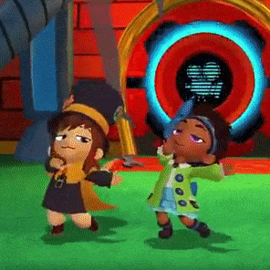

<body>
    <audio src="MYOSAK/Dancing.mp3" type="audio/mp3" autoplay loop></audio>
    <div>
        
    </div>
</body>

<style>
    #dancin {
        padding-left: 39%;
        padding-top: 14%;
        animation-name: dancing;
        animation-duration: 5s;
        animation-iteration-count: infinite;
    }

    @keyframes dancing {
        0% {
            width: 300px;
        }

        10% {
            width: 400px;
        }
        20%{
            width: 450px;
        }
        30%{
            width: 500px;
            transform: rotate(720deg);
        }
        40%{
            width: 400px;
        }
        50%{
            width: 300px;
        }
        60%{
            padding-left: 300px;
            padding-top: 0px;
            width: 400px;
        }
        70%{
            width: 300px;
        }
        80%{
            padding-left: 39%;
            padding-top: 14%;
            width: 500px;
        }
        90%{
            transform: rotate(360deg);
            width: 650px;
        }
        100%{
            width: 400px;
        }
    }
</style>